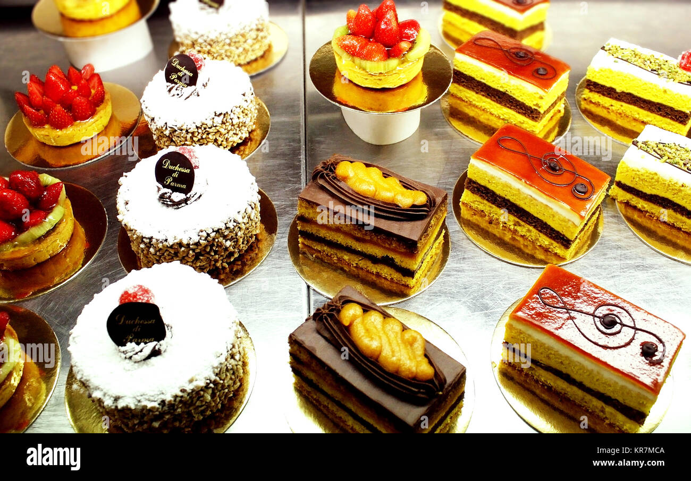
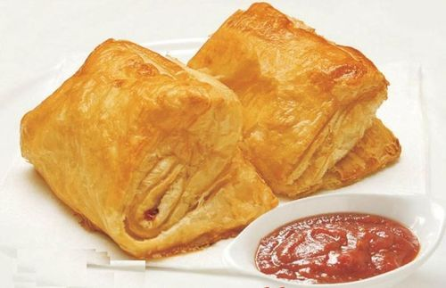
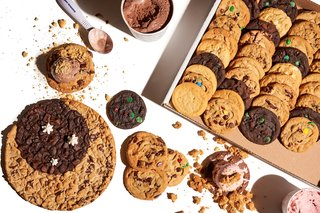
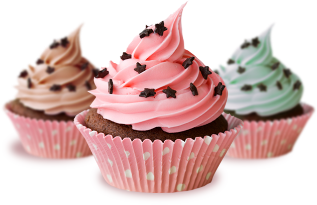

Pastries
This cake sponge was so airy, so fluffy and perfectly sweet. The cake sponge makes ghw entire dessert light and a great base for the other two components of the eggless pastry. To make the sponge, you need very basic ingredients such as all purpose flour, baking soda, baking powder, caster sugar, oil, and yogurt. Homemade yogurt which is thick work
Patties
Veg Aloo Puff Pastry Recipe: Veg puff patties or puff pastry recipe is made with homemade puff pastry sheet from scratch. Bake puff pastry for your breakfast or snacks. This also includes easy puff pastry dough recipe from scratch with flaky pastry recipe ideas.Vegetable aloo puff pastries are made with all purpose flour, butter etc and filled with flavorful vegetables. These veggie puffs are delicious, crisp crust, flaky and soft from inside which makes a hearty hot pocket.
Cookies
When it comes to cookies, there’s some classic recipes everyone recognizes. We’re talking chocolate chip, sugar, oatmeal, peanut butter, snowballs… you get the idea. We’ve got lots of options for those here. We know which are our favorites (like our best-ever chocolate chip cookies or lofthouse sugar cookies), but you’ll have to find your own. It’s our favorite part about baking, trying out different recipes and landing on the ones you’ ll make again and again.
Cupcake
Making homemade chocolate cupcakes is so much easier than you would expect. You'll find the full, step-by-step recipe below — but here's a brief overview of what you can expect from this simple recipe: Sift the dry ingredients (except the sugar) together. Cream the butter and sugar together. Then add the eggs and vanilla. Alternate adding the dry ingredients and milk. Beat until well combined. Spoon batter into prepared cupcake cups — only fill the cups ¾ of the way full so they don't overflow in the oven. Bake until a toothpick inserted in the center comes out clean. Frost as desired.
Pineapple Cake

Ingredients of Pineapple CakeOven Temp: 400 F/204C ,4 eggs,3/4 cup maida, 3/4 cup powdered sugar,3/4 tsp vanilla essence,3/4 tsp baking powder, 2 cake tins, 8 inch round- lined with butter paper or greased and floured1 cup chopped pineapple (the tinned ones which come in a syrup, is fine)1/4 cup of the syrup2 cups cream- chilled and whipped enough to hold its shape